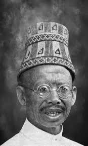
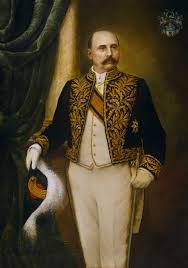

Sri Muda Pahlawan Panglima Polem IX
Panglima Polem IX
Masa Kecil: Lahir dengan nama Teuku Panglima Polem Muhammad Daud di lingkungan bangsawan Sagi XXII Mukim (1845). Sejak kecil, beliau dididik dengan nilai agama dan adat Aceh yang sangat kental.
Sebelum Terkenal: Sebagai pewaris kepemimpinan, ia mendalami strategi gerilya di hutan Aceh Besar sebelum akhirnya memimpin perjuangan secara penuh melawan kolonial.
Masa Perang: Menjadi sosok sentral pertahanan XXII Mukim. Ia dikenal mahir dalam taktik gerilya dan penyelundupan senjata modern untuk mengimbangi kekuatan Belanda.
Akhir Hayat: Demi keselamatan rakyatnya, beliau melakukan perundingan di akhir masa perang. Wafat pada tahun 1939 sebagai pahlawan yang tetap dihormati kawan maupun lawan.

Johannes Benedictus van Heutsz
J.B. van Heutsz
Masa Kecil: Lahir di Coevorden, Belanda (1851). Dibesarkan di lingkungan militer yang disiplin, yang membentuk ambisinya sejak usia dini.
Sebelum Terkenal: Karir militernya melejit setelah ia menulis strategi tentang cara memenangkan perang di Aceh melalui serangan pasukan bergerak cepat.
Masa Perang: Sebagai Gubernur Militer, ia menerapkan taktik "tangan besi" dan menggunakan pasukan Marsose untuk memburu gerilyawan hingga ke pelosok hutan.
Akhir Hayat: Setelah menjabat Gubernur Jenderal Hindia Belanda, ia pensiun ke Eropa dan wafat di Swiss pada tahun 1924 sebagai tokoh militer yang kontroversial.
Garis Waktu Konflik
1898
Van Heutsz diangkat menjadi Gubernur Militer Aceh setelah sukses menyusun laporan strategis bersama Snouck Hurgronje.
1901
Intensifikasi serangan Marsose di Aceh Besar untuk mempersempit ruang gerak gerilya Panglima Polem IX.
1902
Belanda menangkap keluarga Panglima Polem IX dalam sebuah pengepungan sebagai upaya tekanan psikologis.
1903
Sultan Aceh menyerahkan diri demi rakyat, disusul oleh Panglima Polem IX secara resmi di Lhokseumawe.
1904
Van Heutsz diangkat menjadi Gubernur Jenderal Hindia Belanda atas keberhasilannya di Aceh.